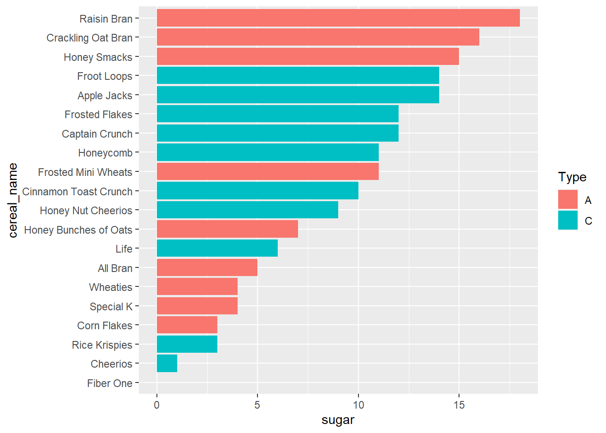
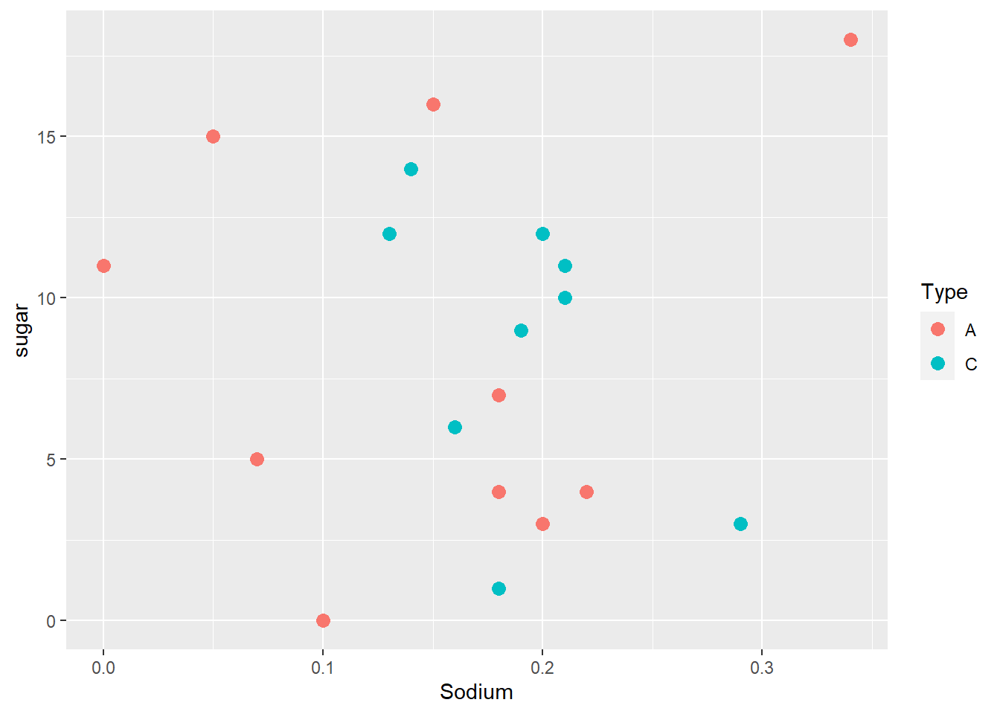

library(tidyverse)
library(ggplot2)
knitr::opts_chunk$set(echo = TRUE, warning=FALSE, message=FALSE)Challenge 5 - Darron Bunt
challenge_5
cereal
darron_bunt
Introduction to Visualization
Challenge Overview
Today’s challenge is to:
- read in a data set, and describe the data set using both words and any supporting information (e.g., tables, etc)
- tidy data (as needed, including sanity checks)
- mutate variables as needed (including sanity checks)
- create at least two univariate visualizations
- try to make them “publication” ready
- Explain why you choose the specific graph type
- Create at least one bivariate visualization
- try to make them “publication” ready
- Explain why you choose the specific graph type
R Graph Gallery is a good starting point for thinking about what information is conveyed in standard graph types, and includes example R code.
(be sure to only include the category tags for the data you use!)
Read in data
Read in one (or more) of the following datasets, using the correct R package and command.
- cereal.csv ⭐
- Total_cost_for_top_15_pathogens_2018.xlsx ⭐
- Australian Marriage ⭐⭐
- AB_NYC_2019.csv ⭐⭐⭐
- StateCounty2012.xls ⭐⭐⭐
- Public School Characteristics ⭐⭐⭐⭐
- USA Households ⭐⭐⭐⭐⭐
cereal <- read_csv("_data/cereal.csv")Briefly describe the data
The cereal dataset shows the sodium (in mg) and sugar (in g) content of 20 different cereals. There is also a column classifying each cereal as either A (adult) or C (children’s).
Tidy Data (as needed)
Is your data already tidy, or is there work to be done? Be sure to anticipate your end result to provide a sanity check, and document your work here.
cereal_new <- cereal %>%
rename(cereal_name = Cereal, sugar=Sugar)
cereal_new# A tibble: 20 × 4
cereal_name Sodium sugar Type
<chr> <dbl> <dbl> <chr>
1 Frosted Mini Wheats 0 11 A
2 Raisin Bran 340 18 A
3 All Bran 70 5 A
4 Apple Jacks 140 14 C
5 Captain Crunch 200 12 C
6 Cheerios 180 1 C
7 Cinnamon Toast Crunch 210 10 C
8 Crackling Oat Bran 150 16 A
9 Fiber One 100 0 A
10 Frosted Flakes 130 12 C
11 Froot Loops 140 14 C
12 Honey Bunches of Oats 180 7 A
13 Honey Nut Cheerios 190 9 C
14 Life 160 6 C
15 Rice Krispies 290 3 C
16 Honey Smacks 50 15 A
17 Special K 220 4 A
18 Wheaties 180 4 A
19 Corn Flakes 200 3 A
20 Honeycomb 210 11 C Are there any variables that require mutation to be usable in your analysis stream? For example, do you need to calculate new values in order to graph them? Can string values be represented numerically? Do you need to turn any variables into factors and reorder for ease of graphics and visualization?
Document your work here.
If I am going to want to be able to compare the sugar and sodium contents of the cereals, I would need them to both be in grams. Given that sodium is currently in milligrams, I will have to mutate the data.
cereal_sodium <- cereal_new %>%
mutate(Sodium = Sodium/1000)
cereal_sodium# A tibble: 20 × 4
cereal_name Sodium sugar Type
<chr> <dbl> <dbl> <chr>
1 Frosted Mini Wheats 0 11 A
2 Raisin Bran 0.34 18 A
3 All Bran 0.07 5 A
4 Apple Jacks 0.14 14 C
5 Captain Crunch 0.2 12 C
6 Cheerios 0.18 1 C
7 Cinnamon Toast Crunch 0.21 10 C
8 Crackling Oat Bran 0.15 16 A
9 Fiber One 0.1 0 A
10 Frosted Flakes 0.13 12 C
11 Froot Loops 0.14 14 C
12 Honey Bunches of Oats 0.18 7 A
13 Honey Nut Cheerios 0.19 9 C
14 Life 0.16 6 C
15 Rice Krispies 0.29 3 C
16 Honey Smacks 0.05 15 A
17 Special K 0.22 4 A
18 Wheaties 0.18 4 A
19 Corn Flakes 0.2 3 A
20 Honeycomb 0.21 11 C If I wanted to be able to plot sodium and sugar onto the same bar, I am going to need that information to be in one column instead of two. Accordingly, I’m going to need to pivot the data.
cereal_grams <- cereal_sodium %>%
pivot_longer(col =c("Sodium", "sugar"),
names_to="Sodium_Sugar",
values_to="Amount")
cereal_grams# A tibble: 40 × 4
cereal_name Type Sodium_Sugar Amount
<chr> <chr> <chr> <dbl>
1 Frosted Mini Wheats A Sodium 0
2 Frosted Mini Wheats A sugar 11
3 Raisin Bran A Sodium 0.34
4 Raisin Bran A sugar 18
5 All Bran A Sodium 0.07
6 All Bran A sugar 5
7 Apple Jacks C Sodium 0.14
8 Apple Jacks C sugar 14
9 Captain Crunch C Sodium 0.2
10 Captain Crunch C sugar 12
# … with 30 more rowsUnivariate Visualizations
Univariate visualizations only look at one variable at a time.
For my first univariate visualization I’m want to show the sodium content of each different cereal, starting with the highest amount.
cereal_sodium %>%
arrange(Sodium) %>%
mutate(cereal_name=factor(cereal_name, levels=cereal_name)) %>%
ggplot(aes(x=cereal_name, y=Sodium)) +
geom_segment(aes(xend=cereal_name, yend=0), color="skyblue") +
geom_point(colour="darkblue", size=2, alpha=0.5)+
coord_flip()
Raisin Bran is the cereal highest in sodium, while Frosted Mini Wheats contain the least.
Next, I want to show the sugar content of each different cereal.
cereal_sodium %>%
arrange(sugar) %>%
mutate(cereal_name=factor(cereal_name, levels=cereal_name)) %>%
ggplot(aes(x=cereal_name, y=sugar)) +
geom_bar(stat="identity") +
coord_flip()
In addition to being the cereal highest in sodium, Raisin Bran is also the highest in sugar. Fiber one has the least sugar.
Bivariate Visualization(s)
A bivariate visualization is used to find out if there is a relationship between two sets of variables.
For example, we could try to answer the question as to whether cereals classified as “adult” contain less sugar than those that are classified as children’s. To visualize this, I have added a colour fill for each bar according to which cereals have been classified as adult or children’s.
cereal_sodium %>%
arrange(sugar) %>%
mutate(cereal_name=factor(cereal_name, levels=cereal_name)) %>%
ggplot(aes(x=cereal_name, y=sugar, fill=Type)) +
geom_bar(stat="identity") +
coord_flip()
Interestingly, the three cereals with the most sugar content (Raisin Bran, Crackling Oat Bran, and Honey Smacks) are labeled as adult cereals
Another bivariate visualization that we could complete would be to examine whether there is any relationship between the volume of sodium and sugar in when classifying cereals at adult or children’s.
ggplot(cereal_sodium, aes(x=Sodium, y=sugar, color=Type)) +
geom_point(size=3)
There does not appear to be a relationship between sugar content, sodium content, and designation as either an adult or children’s cereal.